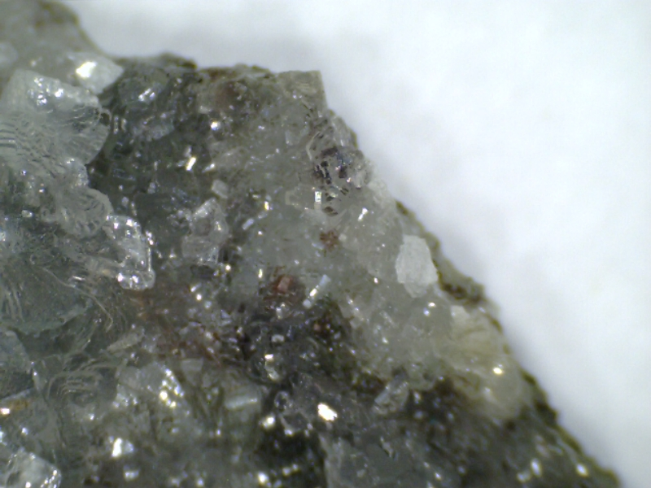

Meine Webseite
Mineralien von M bis P
[Startseite][Artikel][Astronomie][Spieleentwicklung][GAIA][Rechtliches]
{[Mineralien][Fossilien][Kunst][Leipzig][Biologisches]}
-[A-D][E-H][I-L][M-P][Q-T][U-X][Y-andere]-
Menalith
| Katalognummer: | M0074 |
| Gewicht: | 14,6g |
| angebener Fundort: | Spanien |
| Erwerbungsjahr: | 2020 |
Weitere Informationen:
https://mineralienkunst.com/kristallen-a-z/menalit, abgerufen am 15.03.2025
Bilder:
Mondstein
| Katalognummer: | M0051 |
| Gewicht: | 2,8 |
| angebener Fundort: | Indien |
| Erwerbungsjahr: | 2022 |
Weitere Informationen:
https://www.mineralienatlas.de/lexikon/index.php/MineralData?mineral=Mondstein, abgerufen am 16.08.2025
https://www.mineralienatlas.de/lexikon/index.php/MineralData?mineral=Mondstein, abgerufen am 16.08.2025
Nooreena-Jaspis
| Katalognummer: | M0064 |
| Gewicht: | 91,6g |
| angebener Fundort: | Australien |
| Erwerbungsjahr: | 2021 |
Weitere Informationen:
https://www.mineralienatlas.de/lexikon/index.php/MineralData?mineral=Jaspis, abgerufen am 10.03.2025
https://www.steine-und-minerale.de/mineralien/j/jaspis.html, abgerufen am 10.03.2025
Peretait
| Katalognummer: | M0019 |
| Gewicht: | 0,2g |
| angebener Fundort: | Italien |
| Erwerbungsjahr: | 2021 |
Weitere Informationen:
https://www.mineralienatlas.de/lexikon/index.php/MineralData?mineral=Peretait, abgerufen am 17.08.2025
https://www.webmineral.com/data/Peretaite.shtml, abgerufen am 17.08.2025
Painit
| Katalognummer: | M0018 |
| Gewicht: | 0,5g |
| angebener Fundort: | Myanmar |
| Erwerbungsjahr: | 2021 |
Weitere Informationen:
https://www.mineralienatlas.de/lexikon/index.php/MineralData?mineral=Painit, abgerufen am 17.08.2025
https://www.steine-und-minerale.de/mineralien/p/painit.html, abgerufen am 17.08.2025
Petalit
| Katalognummer: | M0065 |
| Gewicht: | 76,2g |
| angebener Fundort: | Namibia |
| Erwerbungsjahr: | 2021 |
Weitere Informationen:
https://www.mineralienatlas.de/lexikon/index.php/MineralData?mineral=Petalit, abgerufen am 11.04.2025
https://www.steine-und-minerale.de/mineralien/p/petalit.html, abgerufen am 11.04.2025
Bilder:
Prehnit
| Katalognummer: | M0069 |
| Gewicht: | - |
| angebener Fundort: | Indien |
| Erwerbungsjahr: | 2021 |
Weitere Informationen:
https://de.geologyscience.com/Mineralien/Silikatmineralien/Prehnit, abgerufen am 25.02.2025
https://www.mineralienatlas.de/lexikon/index.php/MineralData?mineral=Prehnit, abgerufen am 25.02.2025
Bilder:

Pyromorphit
| Katalognummer: | M0005 |
| Gewicht: | 42,8g |
| angebener Fundort: | BRD |
| Erwerbungsjahr: | 2020 |
Weitere Informationen:
https://www.mineralienatlas.de/lexikon/index.php/Mineralienportrait/Pyromorphit?lang=de, abgerufen am 25.02.2025
https://www.steine-und-minerale.de/mineralien/p/pyromorphit.html, abgerufen am 25.02.2025
Bilder:
Aktualisiert: 17.08.2025